Diseñamos soluciones analíticas y de inteligencia artificial para que las empresas tomen mejores decisiones y crezcan de forma sostenible.
La tecnología funciona cuando realmente ayuda al negocio.. Diseñamos soluciones que integran estrategia, datos e IA para producir resultados sostenibles y rentables desde el primer mes.

Cada práctica opera de forma independiente o integrada, generando valor compuesto en cada etapa de madurez analítica.
Hablar con un expertoDiagnóstico de madurez digital y hojas de ruta que aseguran que la analítica escale dentro de la organización.
Modelos predictivos, IA generativa y geoestrategia analítica orientados a decisión de negocio — no a experimentación.
Tableros ejecutivos y sistemas de decisión que generan claridad estratégica en tiempo real para CEO, CFO y CCO.
Productos SaaS, plataformas analíticas y MVPs que resuelven problemas de negocio específicos con velocidad y rigor técnico.

La inversión comercial dependía de criterios locales no comparables, con baja visibilidad ejecutiva sobre qué palancas movían realmente las ventas y la rentabilidad.
Nuestro equipo ha trabajado en las organizaciones más exigentes del mundo y aporta ese estándar a cada proyecto en Colombia y México.
Agendar conversación


Trabajamos con las plataformas y organizaciones más reconocidas del ecosistema analítico y tecnológico global.
En una conversación de 30 minutos podemos identificar oportunidades reales para su empresa.